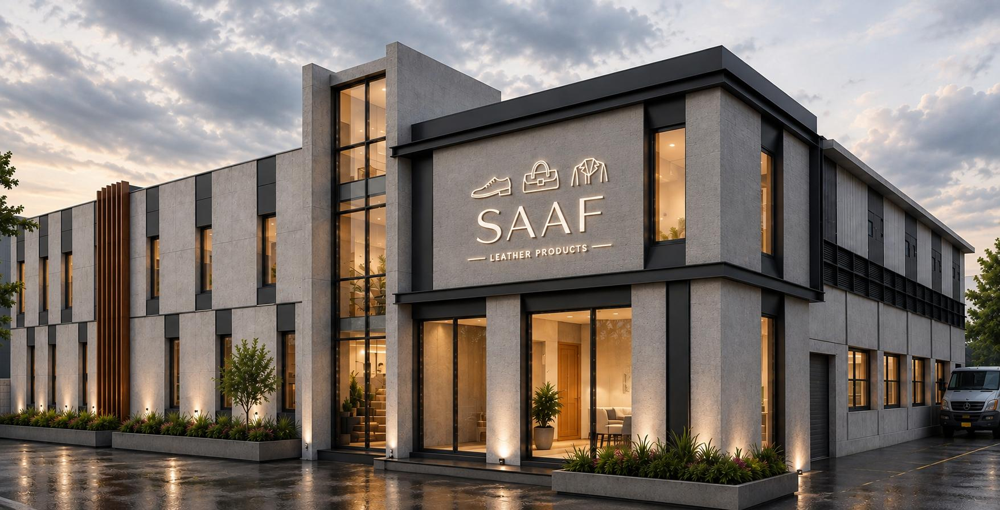
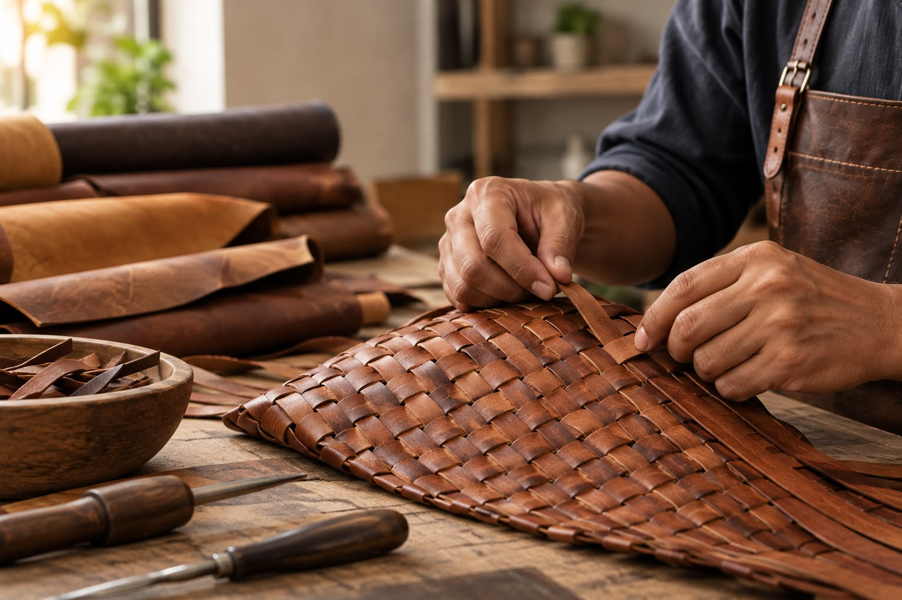

ABOUT SAAF
A leather manufacturing partner for brands, designers, retailers and private-label businesses across global markets.
WHO WE ARE
Established in 2015, SAAF Leather Products is a manufacturer and exporter of ladies' high-fashion leather footwear, leather goods and leather garments, based in Ambur, India.
We work with brands, designers, retailers and private-label businesses to develop and manufacture leather products according to their designs, specifications and collection requirements.
Our approach combines skilled craftsmanship, structured product development and dependable production to support customers from initial concept through sampling and manufacturing.
WHAT WE MANUFACTURE
Our manufacturing capabilities cover multiple leather product categories, allowing customers to develop collections through one manufacturing partner.
Sandals, shoes, loafers, casual, fashion and lifestyle footwear, including handwoven leather constructions.
Handbags, shoulder bags, crossbody bags, totes, clutches, travel and lifestyle bags and small leather goods.
Jackets, shirts, tops, skirts, trousers and fashion and lifestyle leather garments.

SPECIALIZED CRAFTSMANSHIP
Handwoven leather is one of the specialized constructions we can develop across footwear, bags and garments.
We can work with different weaving patterns, widths, textures, colours and combinations to create distinctive leather constructions according to collection or product requirements.
FROM CONCEPT TO PRODUCTION
We work through a structured development process to turn design concepts and technical requirements into production-ready products.
Development can begin from sketches, reference photographs, DXF files, technical specifications, blueprints or physical references.
Footwear development can use ShoeMaster 3D CAD technology for geometry visualization and simulation.
Physical prototypes are developed and refined through a dedicated pre-production process before approval.
Approved products move into pilot and production stages with technical documentation supporting consistent manufacturing.
OUR CAPABILITY
Our current manufacturing capacity allows us to support multiple leather product categories while maintaining a strong focus on craftsmanship and product quality.
QUALITY
Uncompromising quality and refined workmanship define SAAF.
From hand-selecting premium leathers to applying the final, meticulous touches, our craftsmanship is driven by a focus on delivering products that meet customer expectations.
Product development includes material selection, prototyping, fit trials, testing and pre-production development before products move into manufacturing.
RESPONSIBLE MANUFACTURING
We believe manufacturing capability should develop alongside responsibility towards people, society and the environment.
We work in accordance with ethical manufacturing principles and applicable legal requirements.
We focus on dignity, equality, safety and a safe and healthy working environment for our workforce.
Our associated tanneries are certified members of the Leather Working Group, supporting responsible leather sourcing.
AFFILIATIONS
Our manufacturing workshops operate under SA8000 guidelines and are currently in the advanced audit phase towards certification.
Our associated tanneries are certified members of the Leather Working Group.
SAAF Leather Products is a registered member of the Council for Leather Exports, India.
SAAF is a member of the Federation of Indian Export Organisations.
GLOBAL REACH
Based in Ambur, Tamil Nadu, SAAF serves customers across international markets including Australia, Europe and the USA.
OUR JOURNEY
SAAF Leather Products was founded in Ambur by Aafaque Mohammed K and Sadeed Ahmed M.
Mohammed Taukhir M joined SAAF Leather Products, strengthening the team as the company continued its development.
SAAF continues to develop leather footwear, goods and garments for customers across international markets.
WORK WITH SAAF
Share your design, specification or product requirement with our team and discuss how we can support your development and manufacturing needs.
Discuss Your Requirements →